JRRL3 - Terceras Jornadas Regionales de Redes Libres en FISL12 - Foro Internacional de Software Libre
index | OSiUX | blog | docs | charlas | rss
La previa
El jueves por la noche, empezamos en el hostel con la revisión del manifiesto, en plena discusión tuvimos que buscar un nuevo lugar, ya era tarde para estar en el patio (al parecer hacíamos mucho ruido ¿?) y salimos para terminar en una pizzería, donde nos habilitaron un patio y estuvimos varias horas, hasta la madrugada. Inicialmente el conflicto comenzó por el significado de principalmente es meramente económico, descubrimos que los distintos países daban una connotación distinta, teníamos diferencias semánticas e idiomáticas, seguidamente fueron surgiendo situaciones similares, para terminar decidiendo aprobar en general el manifiesto ya que todos estábamos de acuerdo y que finalmente podíamos resolver en la lista redeslibres@altermuni.net el texto definitivo adecuándolo no sólo a cada idioma sino también a cada región si fuera necesario.
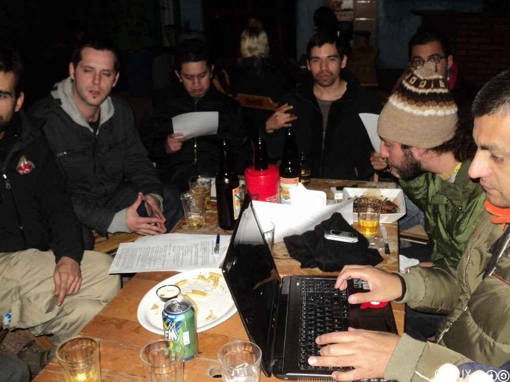 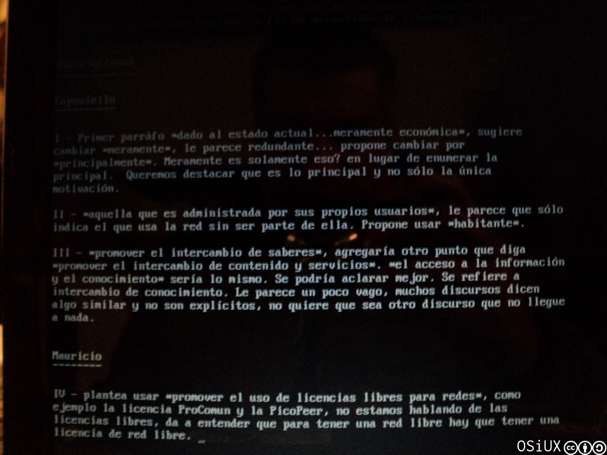 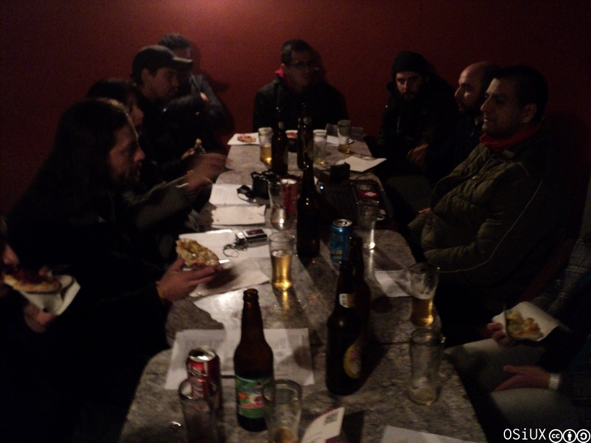
Apertura
"Esta es la tercera jornada de las redes, donde nos encontramos para hablar de las redes, de buscar ideas comunes por las redes, acá estamos los representantes de cada grupo, la idea es hablar de lo que estamos hablando entre nosotros, del manifiesto de lo que pensamos para las redes libres para nuestro gran continente que es Sudamérica. En las segundas jornadas pensábamos qué tenemos en común qué buscamos nosotros por las redes, empezamos allá en Uruguay, en Tacuarembó una charla, cómo buscar un sentido común, cómo mostrar a los otros qué es una red libre, qué diferencia de una red privada de una red pública y por qué … y así estamos como hace tres meses escribiendo en una lista de correo que es la lista de redeslibres, ahí buscamos por un censo común entre nosotros, hay distinciones dentro de los idiomas, entre el portugués y el español y entre los castellano y entonces lo delineamos, lo que estamos haciendo es un working progress, un trabajo en progreso. Lo que pasa buscamos los puntos que estamos de acuerdo y cómo vamos a hacerlo esto porque si quieres tener una red libre estos son los puntos principales para que sea libre y por qué lo tenemos y qué es esto, donde tenemos el manifiesto en la wiki." Rodrigo Troain, ASL Mesh, Brasil.
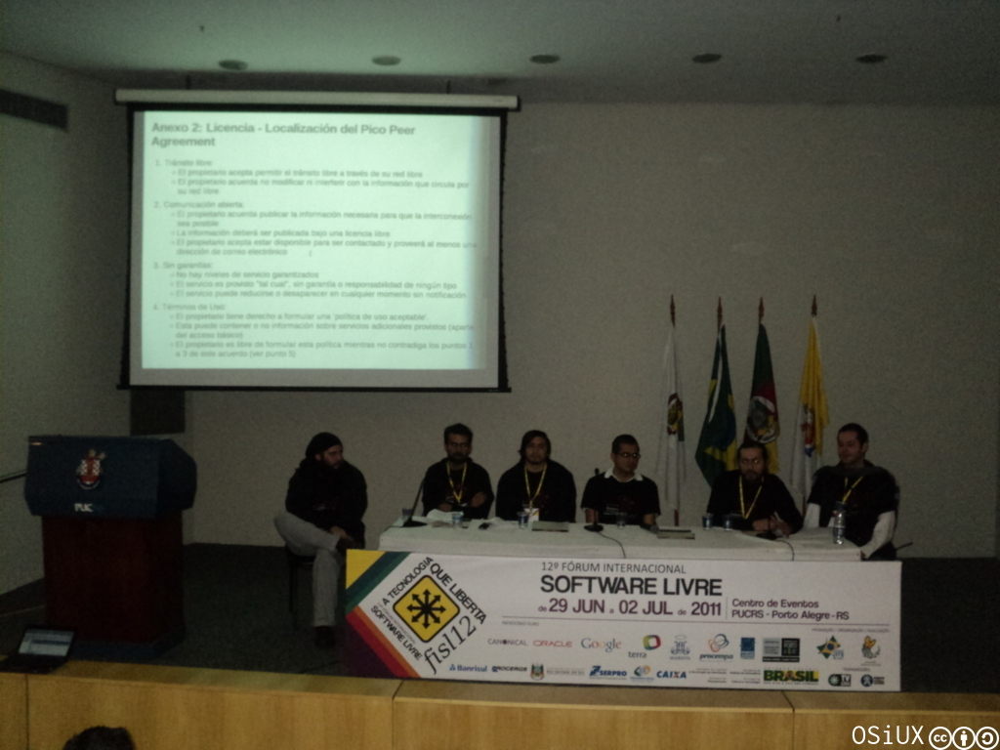
Representantes
- BuenosAiresLibre, Argentina
- Elizabeth Sosa
- Jorge Franco
- Osiris Alejandro Gomez
- CasaresLibre, Argentina
- Jonathan Gabriel García
- ASL Mesh, Brasil
- Rodrigo Troian
- Vinicius John
- AnilloSur/VTL, Chile
- Hector Caposiello Acuña
- Ignacio Andres Espinoza Pinto
- BogotáMesh, Colombia
- Jorge Enrique Rojas
- Hollman Eduardo Enciso Rocha
- MontevideoLibre, Uruguay
- Mauricio Sosa
- Inchalá, Uruguay
- Santiago Ferreira
Manifiesto de las Redes Libres
Dado el estado actual de la red de redes, Internet, que es principalmente operada y controlada a nivel mundial por un pequeño número de corporaciones internacionales cuya motivación principal es meramente económica; y considerando las implicaciones que esto tiene en el curso que está tomando el desarrollo de la red de redes, los miembros y activistas de las Redes Libres manifestamos que:
a. una red libre es aquella red informática que es construída y administrada colaborativamente por sus propios usuarios y presenta como mínimo estas características:
- garantiza la descentralización y evita la monopolización de recursos, la coerción o la opresión.
- respeta la neutralidad de la red.
- garantiza el acceso público y libre.
- su estructura es de red distribuída; el crecimiento es posible desde cualquier punto existente.
- la interconexión se realiza entre pares que pueden publicar o recibir servicios y contenidos en igualdad de condiciones.
- promueve la creación de otras redes libres, su interconexión e interoperabilidad.
Texto completo en: http://redeslibres.altermundi.net/Manifiesto
No somos piratas, Compartir es bueno
"Soy Jorge Franco, Vampii de BuenosAiresLibre y uno de los más viejos de BuenosAiresLibre, uno de los pocos fundadores que quedan… el tema de compartir en la redes libres básicamente es bueno, porque compartir es bueno aunque a veces de chicos nos enseñan que compartir no es bueno, nos quieren dar a entender que para acceder a una red tenemos que pagar… hay un manejo del idioma donde usan piratería y cosas así y nosotros no atacamos barcos y no es esa la cosa, compartimos y cuando somos chicos nos enseñan a compartir, no a ser egoistas, de hecho es el grave problema con los chicos, el egoísmo de que quieren todo para si, con lo que estamos haciendo en estos proyectos es básicamente lo mismo cada uno lo implementa como puede en su región, que no siempre tenemos las mismas necesidades ni las mismas herramientas. En Buenos Aires nuestro tipo de red es infraestructura, Bogotá tiene cerro y les conviene más una red tipo mesh, no es ni más ni mejor ni peor, sigue siendo una forma más simple o menos compleja, básicamente todos tenemos de fondo la misma idea de formar una red libre y poder unir nuestras diferencias y nuestras redes libres, no importa cómo, usamos inalámbrico porque nos conviene pero bueno, si viene alguien mañana y dice tiramos 200 kilómetros de fibra óptica, gracias! obrigado! claro, lo vamos a usar.
"Lo que decía Vampii, a todos los que nos acusan de que somos piratas, les queremos decir que compartir es bueno, no somos piratas", Osiris Alejandro Gomez, BuenosAiresLibre
BuenosAiresLibre
- Slides BAL-JRRL3 1
"Es muy importante la difusión, sumar nuevos integrantes, darles herramientas para que se puedan comunicar con nosotros y sacarse todas las dudas de cómo participar, porque hay muchas dudas al principio, un novato que no sabe nada, abosulatamente nada, como yo, me interesó mucho el proyecto y empecé a mirar de a poquito los mails en las listas y hay gente muy copada que no hace falta que tengas ningún conocimiento técnico para arrancar, entonces empezás de a poquito y es muy importante eso, darle la facilidad y darle esa confianza de que podés ir y preguntar cualquier cosa, que vas a ser bien recibido y que te van a responder y sacar todas las dudas que tengas. Una de las herramientas que hay es el IRC, el canal de #buenosaireslibre, después tenemos listas de correo, en la que está la general que puede entrar cualquiera y que se anota y puede enviar mail y ver las dudas de los demás y eso es importante porque resolvés tus dudas y le estas sacando las dudas a muchos más que no se animaron a preguntar. Otra herramienta muy importante es la wiki que tenemos, ahí está registrado absolutamente todo lo que se está haciendo." Elizabeth Sosa, BuenosAiresLibre
Gracias BALeros
"Anoche estuve como hasta las 6 de la mañana haciendo esta tontería, agarré el wiki y liste todos los nombres de todos los usuarios que alguna vez se registraron, ésto creo que es desde el 2003 mas o menos y estuve jugando para que sea un color sí y un color no, en fin, estos son todos los que alguna vez editaron el wiki u hoy inclusive, tenemos mas de 1600 páginas, con soluciones prácticas a problemas concretos, aplicables a lo que ustedes necesiten y para lo que ustedes quieran y bueno, gracias a todas esas personas que están ahi y que editaron algo, y hay muchas más porque no todos se registran, hoy estamos acá y podemos decir todo lo que estamos diciendo y eso es importante porque posiblemente el próximo encuentro, tal vez no esté Vampii, no esté yo, no esté Elizabeth y estén otros hablando sobre lo mismo gracias al pequeño granito de arena que hicimos hoy acá", Osiris Alejandro Gomez, BuenosAiresLibre.
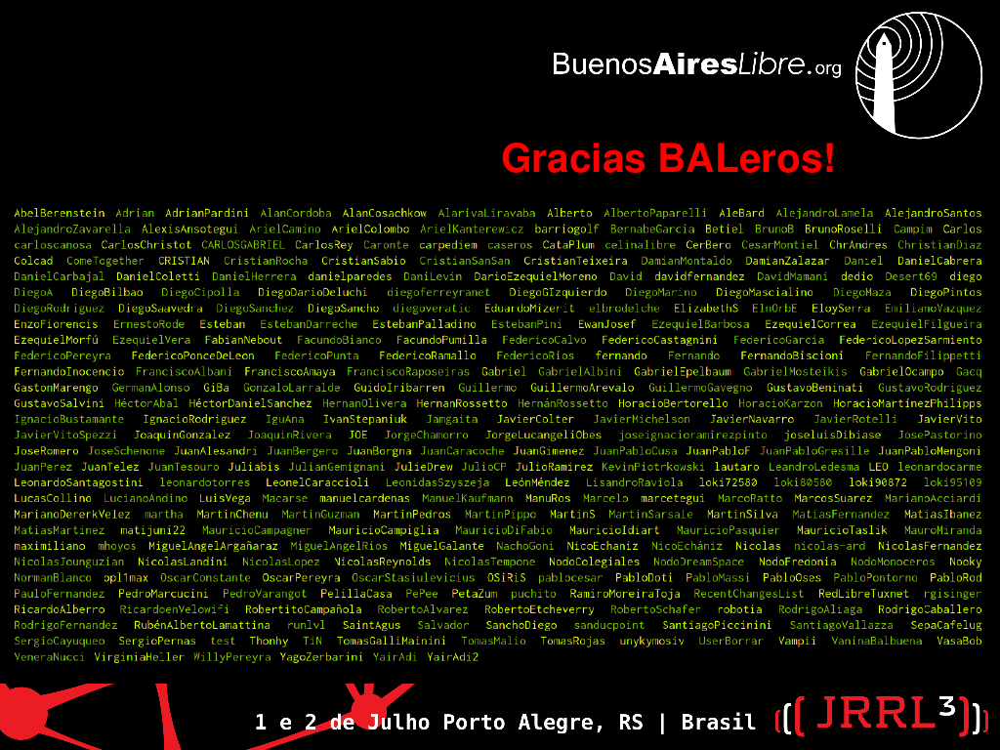
MontevideoLibre + Inchalá
BogotáMesh
ASL Mesh
No pude ver toda la presentación de ASL ya que nos fuimos a almorzar, pero según Rodrigo estuvo muy buena, al menos pude capturar una foto.
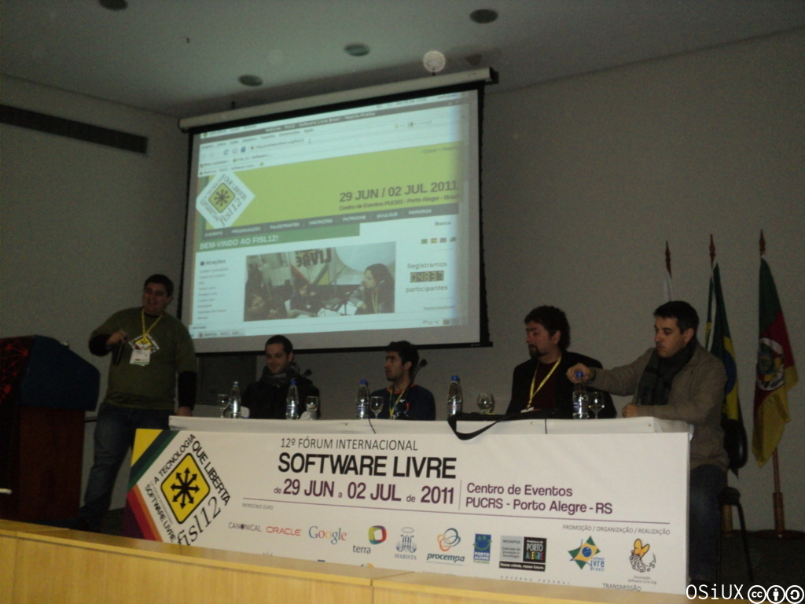
CasaresLibre
- Slides CasaresLibre http://pub.osiux.com/bal/3jrrl_brasil.pdf
Volvimos tarde de almorzar y nos cancelaron la charla de CasaresLibre, la verdad que la organización del evento es muy estricta y con sólo 5 minutos de demora se cancela la charla, finalmente aprovechando el tiempo que quedaba y con la gente presente, Jonathan se armó de valor y dio su charla!
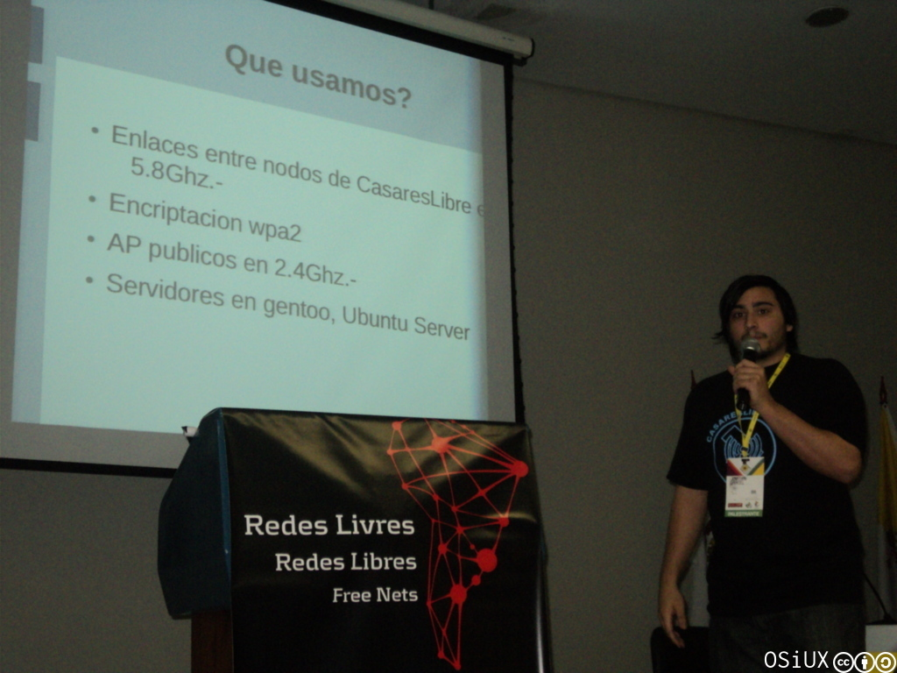
AnilloSur + VTL
Lamentablemente no contamos con el video de esta charla y también tuvo la mala suerte de corromperse el archivo de los slides de la charla, aunque accidentada, terminó muy bien la charla a cargo de Capo e Ignacio acerca del trabajo realizado en AnilloSur y Video Tránsito Local, con una rueda de preguntas.
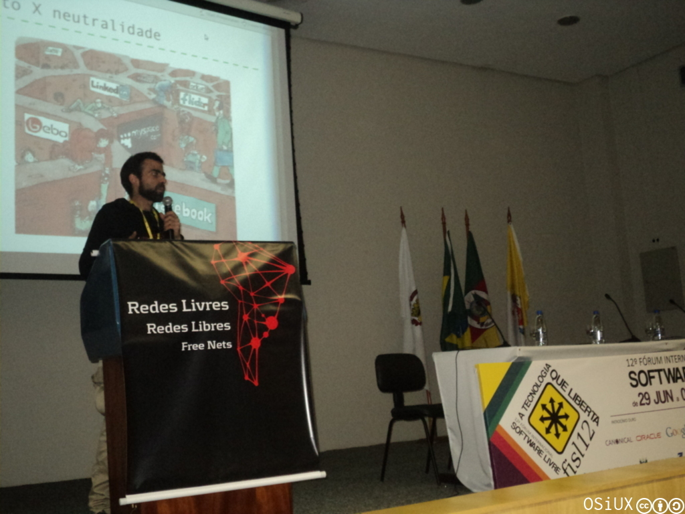
Elektra presenta Mesh Potato
En uno de los auditorios mas grandes, donde pusimos el banner de RedesLibres, Elektra (usando remera JRRL3) presentaba Mesh Potato de `VillageTelco http://villagetelco.org/`_ un dispositivo que integra un AccessPoint y un ATA Voip, es decir parece una AP normal pero además de tener un conector RJ45 para LAN, posee un conector RJ11 donde conectar un teléfono fijo y convertirlo en un teléfono IP, de esta manera con sólo estar conectados a internet o a otro AP podés disfrutar de la telefonía IP usando un teléfono común. Las ventajas principales del Potato son:
- hardware libre
- muy bajo consumo
- pensado para hackear
- soporta B.A.T.M.A.N.
- muy liviano y pequeño
Terminada la charla, otra vez nos juntamos todos para una foto grupal, esta vez con la remera de las JRRL3!
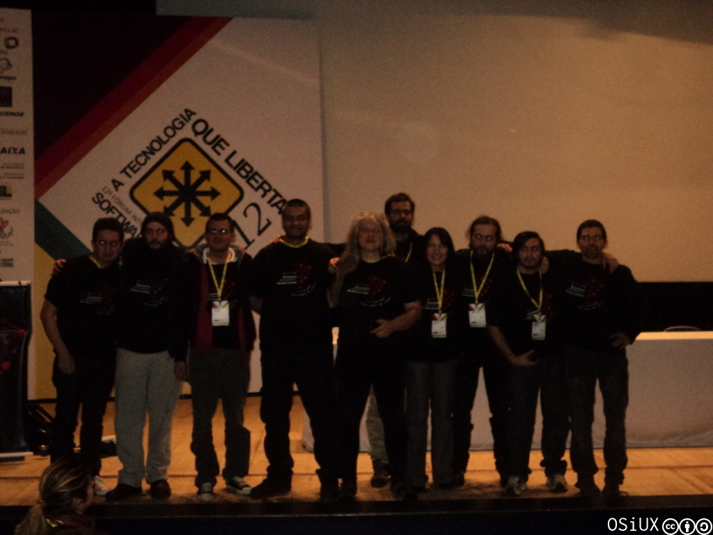 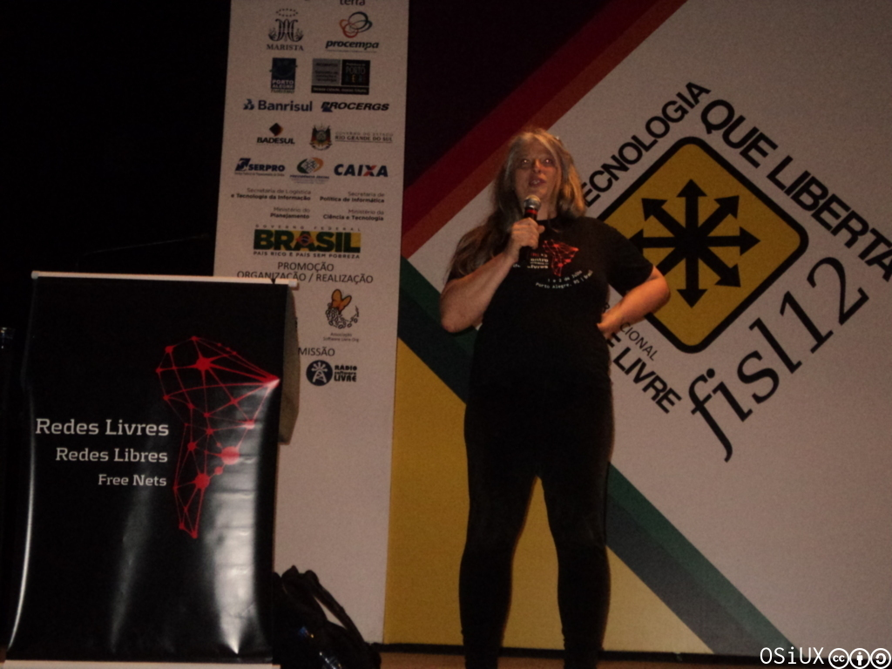
Taller B.A.T.M.A.N.
EL sábado por la mañana comenzamos con un charla sobre el protocolo B.A.T.M.A.N. explicado nada menos que por Elektra donde luego puedo jugar un poco a flashear Potato, algunos Linksys y Ubiquiti Bullets.
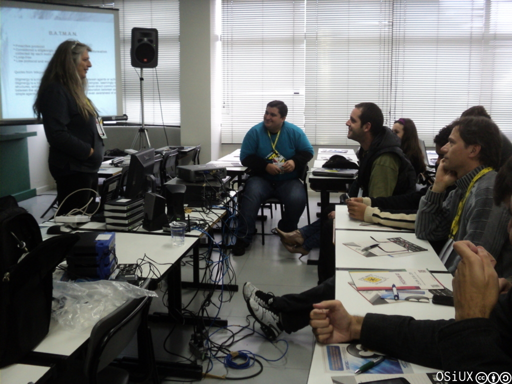 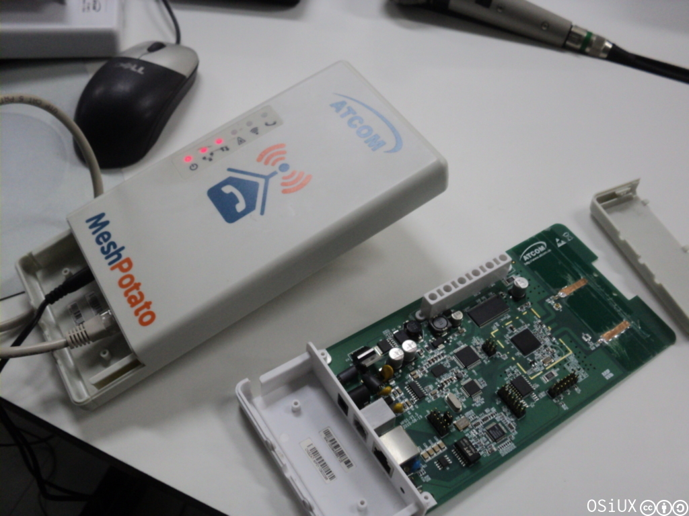
Entrevista Radio Software Libre
Por la tarde del viernes, coordinado por Rodrigo, tuvimos una entrevista acerca de las RedesLibres en la Radio Software Libre donde un integrante de cada red pudo aportar acerca de que estamos haciendo y el porqué, comentamos sobre el manifiesto y también grabamos la entrevista para que todos la puedan disfrutar.
"Yo quería…no, todos queremos invitarlos y si estan escuchando y si entienden mas o menos y si les interesó un poco el tema, no sé dónde estarán pero queremos invitarlos a participar de lo que estamos haciendo y crear redes para conectarnos entre todos, ese es un poco el mensaje de todos acá e invitarlos a que se interesen, investiguen si se animan a crear una red libre", Barbanegra, MontevideoLibre
Manifiesto para Elektra en Inglés
El viernes por la noche tuvimos la cena de palestrantes en la churrascaria Galpao Crioulo, un quincho increíblemente grande, y en un clima muy ameno, hicimos un primer intento de traducción al inglés por Daniel Wolff quién leía el texto que estaba en español, no hay dudas de que lo pensaba en portugués y decía en inglés, pudimos grabar parte de la traducción, aunque quedamos en terminar la traducción formalmente en pocos días. Elektra oía atentamente y terminaba de enteder lo que habíamos estado hablando todo el día.
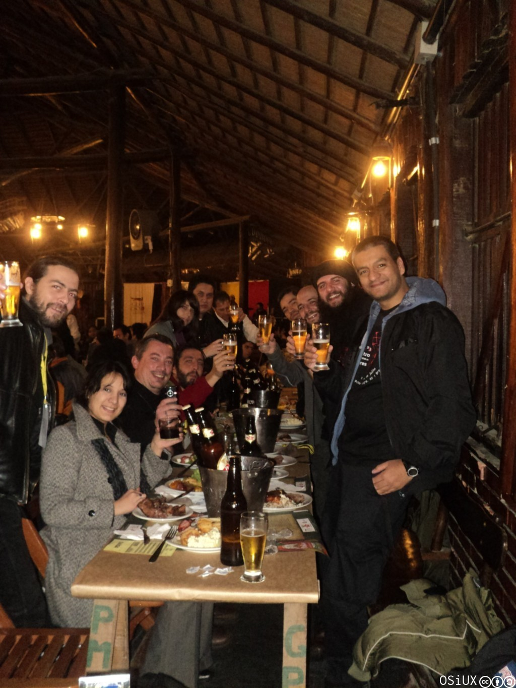 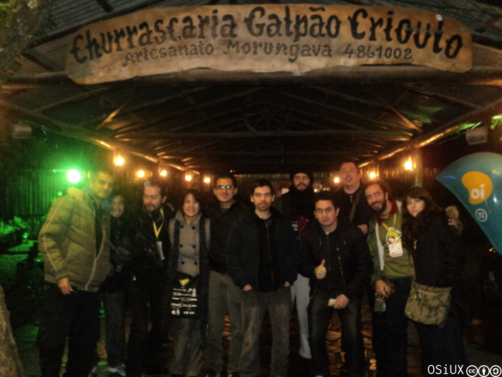 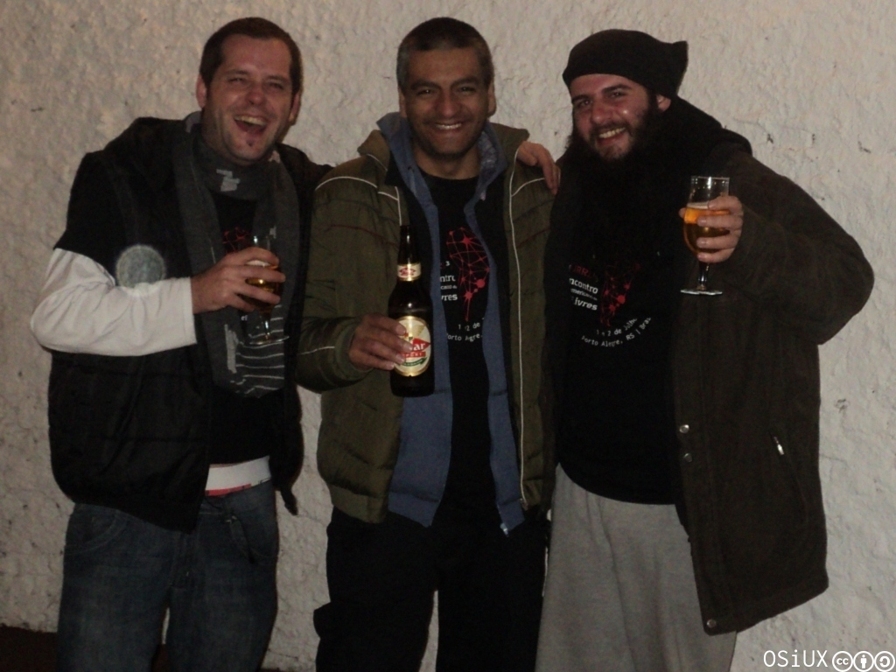 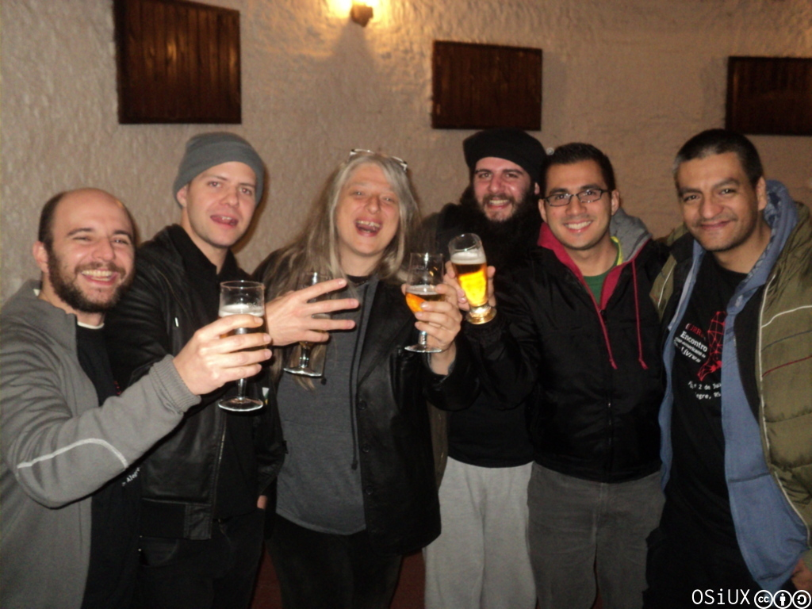
Conociendo la ciudad
El domingo, ya sin evento, logramos ver la luz del día y salimos a pasear por la ciudad, Vinicius se ofreció como guía pasándonos a buscar por el hostel, donde luego de una caminata corta terminamos en una churrasquería donde, como el resto de las churrasquerías, intentan que devores kilos de carne en muy poco tiempo, acercándote cada escazos 2 minutos un nuevo pinche lleno de sabrosa comida.
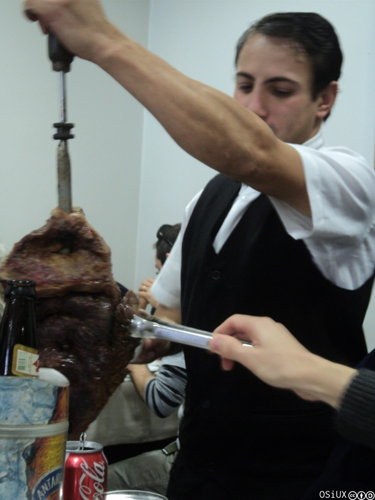
En fin, no estábamos solos, habían varios integrantes de la organización del FISL como así también otros palestrantes, entre ellos elektra nuevamente a quién ya la teníamos agotada de tanta foto. Luego de la sabrosa comida que otra vez nos fue invitada, paseamos por un parque enorme, donde en un momento elektra mostró la remera que decidió usar ese día, nada mas y nada menos que la remera de BuenosAiresLibre, que le había regalado el día anterior, definitivamente nos tomó cariño.
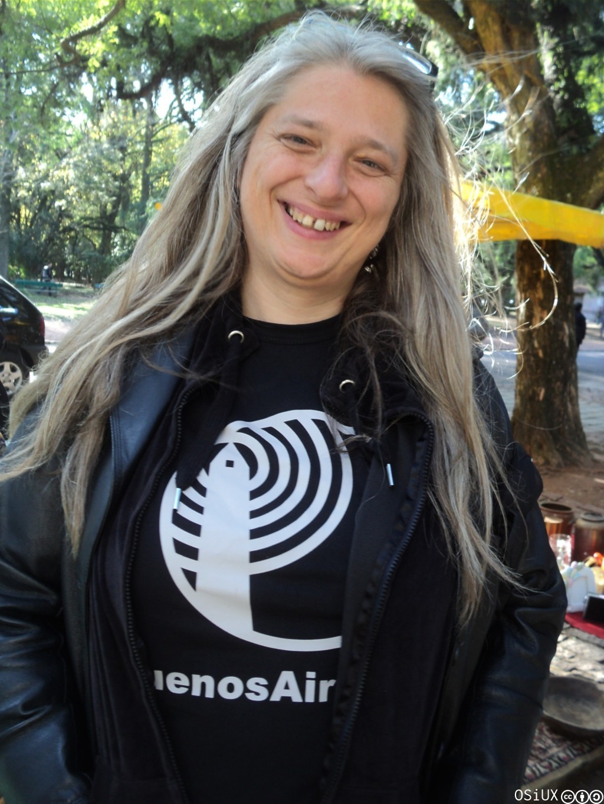
Terminada la vuelta al parque, hicimos un largo camino por el centro, con tiempo para una visita artística a un museo y luego de vuelta a caminar hasta llegar al río, donde hacía tanto o más frío que en el resto de la caminata pero esta vez con la gratificante oportunidad de ver el atardecer sobre el río.
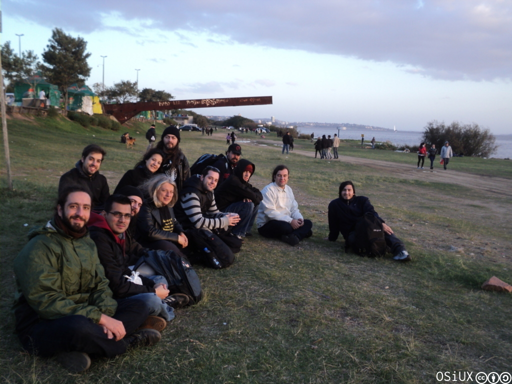 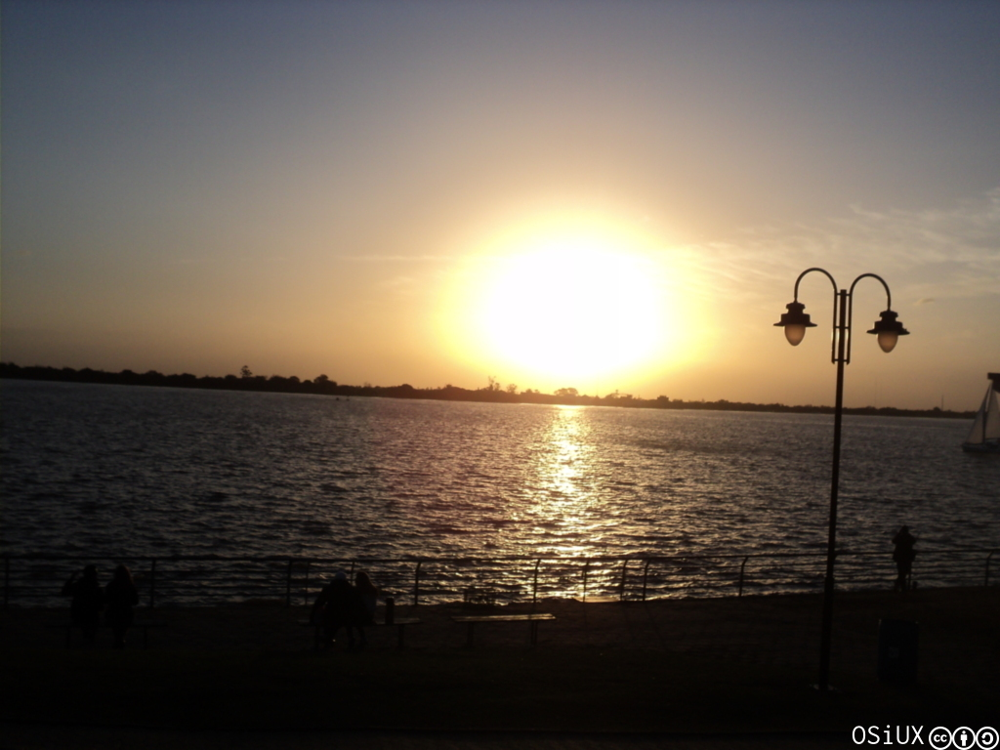